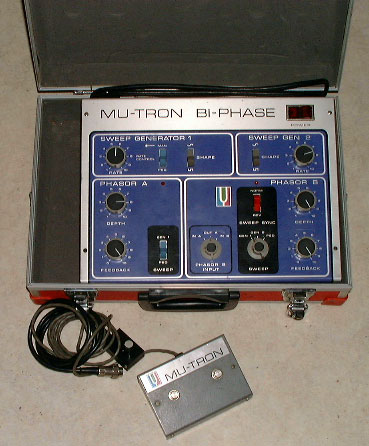
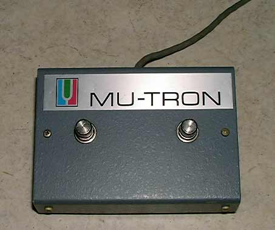
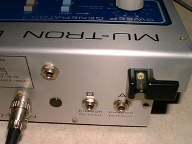
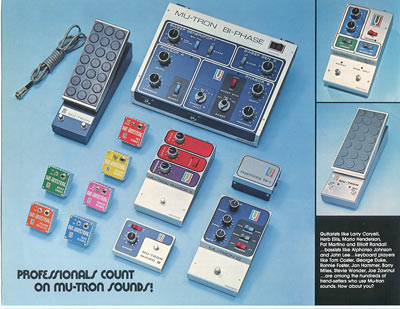
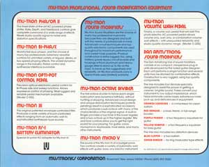
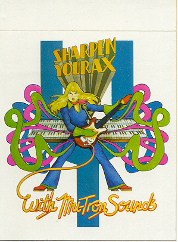

The Mutron Biphase
is a legendary phasor pedal, designed by Mike Beigel along with Aaron Newman at Musitronics USA in about 1973-4..
. Here are pictures and other
material i had in my folders about of this great phasor box
and Musitronic's
There are much more informations available at the official Musitronics website
www.mu-tron.org
Schematics
-
-
-
This
customised vintage is featured with a manual/pedal
pot mounted is a box directly on the Pedal wire plug
.

The
famous and so mysterious pedal, i say that because without
the vintage do not work !
It
is two simple switches to connect 2 wires to ground or leave
the circuit open ...

Here
is the rear panel of another vintage .
On this Bi-Phase there is an extra jack , it is a CV control
input replacing the Pedal ...
Great
to drive the phasor from any modular source ...

Some
Musitronic's advertising materials . Clic on pictures to enlarge.


More infos about Musitronics at
www.mu-tron.org

|